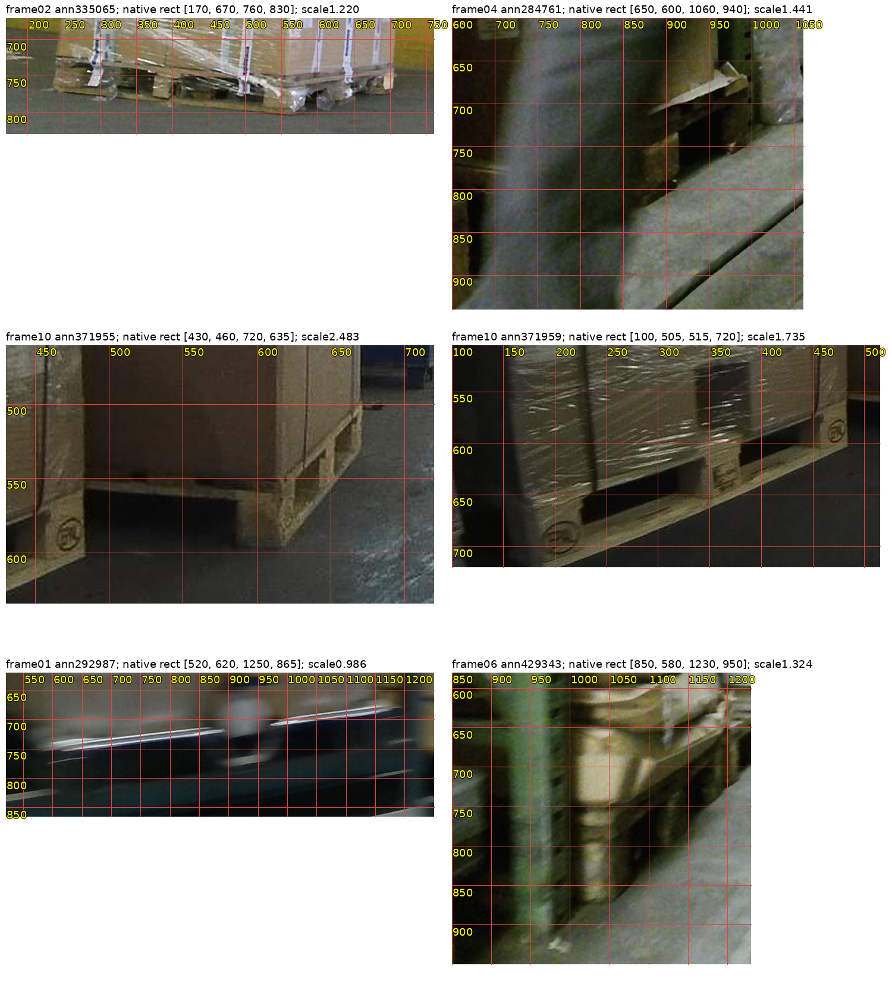
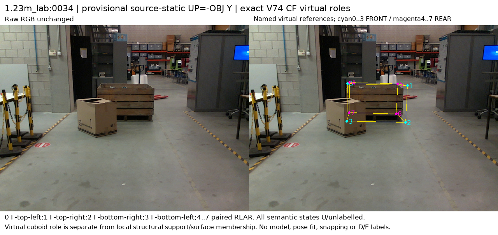
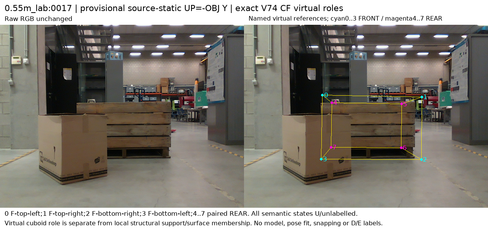
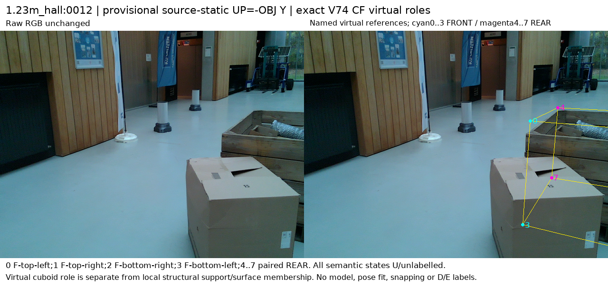
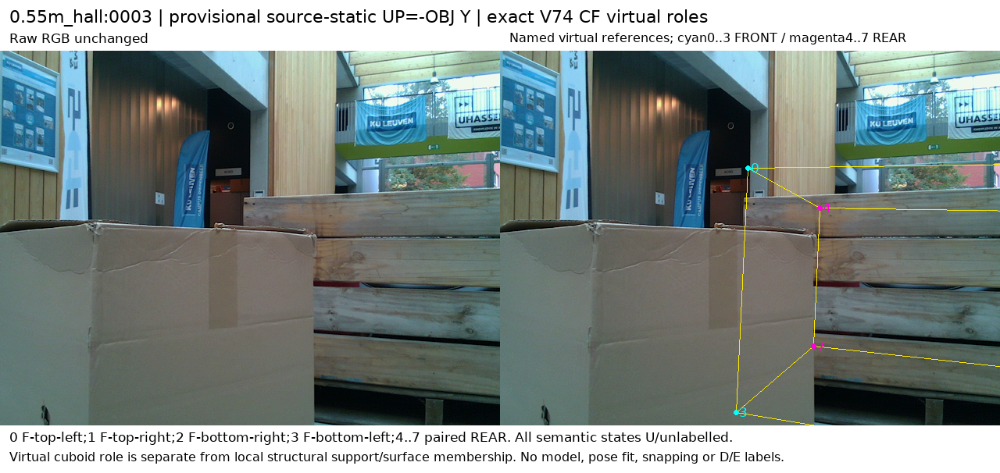

LOCO: 주석용 확대, 모델 입력 아님

source 참조 검토용 그림입니다. 원래 투영 보고서는32개U를 보존하며, 조건부제안 D/E는 위 표와 별도 root adjudication JSON에 기록했습니다.공개 원본16장과32개 제공pose 기반 가상 참조점의 실제 RGB·역할·보임/가림 제안 검토를 완료했다. source-only 조건부 제안은 D11/E4/U113이며, 초기 추론 entity/순서 연결 전이므로 아직 학습에 넣지 않는다.
새 모델 성능 보고서가 아닙니다. 새 학습·가림모델 추론·현재223 평가·PnP는 모두0회입니다.
| 기존 분할 유지 | 보임 D | 외부 가림 E | 자기 가림 S | 불확실 U |
|---|---|---|---|---|
| LOCO_TRAIN | 2 | 0 | 0 | 94 |
| Pallox_LAB_TRAIN | 6 | 2 | 0 | 8 |
| Pallox_HALL_VAL | 3 | 2 | 0 | 11 |
합계128 review slots: D11 / E4 / U113. LOCO424개 전체 instance의 native 주석을 완료했다는 뜻이 아닙니다. 사람 gold는0개이며, 두 assistant의 상호 검토 제안입니다. 고정 참조/원본U 파일은 보존했습니다.
공개 데이터에 팔레트 bbox/visible mask가 있다는 사실만으로 native8 의미의 보임/외부 가림 정답이 생기지는 않는다. LOCO12장에서는 흐림·적재물·잘림·작은 대상이 많아 명확한 제안은 한 대상의2 D에 한정됐다.
Pallox mesh는 평평한 팔레트가 아니라 높은 목재 상자/feet이며 rawY 방향을 그대로 기존Zup 순서로 붙이면 위아래 역할을 잘못 연결할 수 있었다. 실제 RGB/mesh에서 -Y를 위로 정하고 원래 CF규칙을 적용했다.
제공pose는 변경하지 않았다. static축 좌표변환은 같은 투영을 수치오차범위에서 보존한다. GThearest순열, 점 이동, 표면snapping, posefit을 하지 않았다.
Pallox는 상단/오른쪽 하단 지지 구조의 D9와 cardboard가 전면 왼쪽 하단을 가리는 조건부E4 제안이 나왔다. 화면밖8개와 자기/외부 분리 불명11개는U로 남겼다.
가상 참조점의 역할, 구조 지지의 보임, 투영 픽셀의 재질 소유권과 표면 일치는 다르다. 일부 D 제안의 투영점은 배경에 놓이며 이를 v61식 픽셀 존재 정답으로 쓰지 않는다.
예상 참조점→재구성mesh의6~13cm거리는 진단이다. 정확한표면에없다는이유만으로 분류를 막거나, 다른점으로옮겨 원래 목표를 바꾸지 않았다.
조건부제안15개는 새source증거이지만 실사전이 성공이나 정확3px 위치정답을 뜻하지 않는다. 기존 actualinitializer와 같은 target/native를 가리키는지 아직 확인하지 않았다.

source 참조 검토용 그림입니다. 원래 투영 보고서는32개U를 보존하며, 조건부제안 D/E는 위 표와 별도 root adjudication JSON에 기록했습니다. source 참조 검토용 그림입니다. 원래 투영 보고서는32개U를 보존하며, 조건부제안 D/E는 위 표와 별도 root adjudication JSON에 기록했습니다.
source 참조 검토용 그림입니다. 원래 투영 보고서는32개U를 보존하며, 조건부제안 D/E는 위 표와 별도 root adjudication JSON에 기록했습니다.
source 참조 검토용 그림입니다. 원래 투영 보고서는32개U를 보존하며, 조건부제안 D/E는 위 표와 별도 root adjudication JSON에 기록했습니다.
source 참조 검토용 그림입니다. 원래 투영 보고서는32개U를 보존하며, 조건부제안 D/E는 위 표와 별도 root adjudication JSON에 기록했습니다.
source 참조 검토용 그림입니다. 원래 투영 보고서는32개U를 보존하며, 조건부제안 D/E는 위 표와 별도 root adjudication JSON에 기록했습니다.
source 참조 검토용 그림입니다. 원래 투영 보고서는32개U를 보존하며, 조건부제안 D/E는 위 표와 별도 root adjudication JSON에 기록했습니다.고정16 공개원본에 기존R0 firstargmax/원native8/L을 그대로 적용하여 물체/역할 연결을 확인한다. 기존출력2장은 별도replay 비교하고 noquery/다른물체/OOB는보존한다. 이 단계에서도 가림head학습·새private평가·PnP는하지 않는다.
현재 실사 마지막결과: 보임1137/1147, 외부가림35/90. 새 실사 성공 근거는 아직 추가되지 않았습니다.